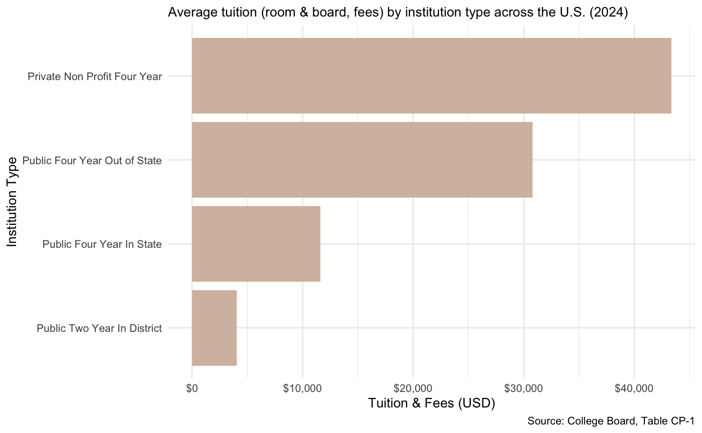

Tuition Costs
Private nonprofit universities remain the most expensive institution type, with out-of-state public universities close behind. Average tuition costs range from about $8,000 for in-state two year schools to more than $45,000 at some private universities.
Loan Crisis
Despite efforts by past presidents to relieve the burden of student loan repayments, such as former President Obama's Pay As You Earn (PAYE) plan and former President Biden's Saving on a Valuable Education (SAVE) plan, the total amount of federal student aid has tripled since 2010. As of September 2023, 43 million U.S. borrowers collectively owed over $1.6 trillion in federal student loans, which exceeds both auto loan and credit card debt in the U.S.
Access by Region
The scatterplot compares average in-state tuitions to median household incomes by region. Although there is no direct correlation between the cost of college and state median income, data highlights a gap between growing tuition prices and stagnant wages.
Debt Distribution
The treemap shows how student loan debt is distributed across loan balance categories. Data from the National Center for Education Statistics reveals a racial disparity in debt distribution, with Black and American Indian students more likely to carry higher levels of debt compared to their white and Asian peers.
Tuition Comparison
These two maps show the change in average in-state tuition across the U.S. from 2012 to 2023. Over the past decade, tuition has risen significantly nationwide. In 2012-2013, the highest average in-state tuition was $24,705 in New Hampshire. By 2023, Vermont topped the list with an average of $30,887.
Next Steps
The rising cost of college and mounting student loan debt remain urgent issues. The Trump administration resumed student loan repayments on May 5 and made clear there would be no broad loan forgiveness during his term. "We're in the worst student loan landscape that we've ever been before," Sabrina Calazans, executive director of the Student Debt Crisis Center, told NBC. For borrowers struggling to manage repayment, enrolling in an income-driven repayment plan or applying for loan rehabilitation may offer some relief.
In-State Tuition in 2012
In-State Tuition in 2022
Tuition & Fees by Institution Type
America’s Federal Student Loan Crisis

Wilkes Iwanicki, a sophomore civil engineering major, feels the burden of his student loans while attending the University of Maryland.
"I chose to go in-state because of the lower tuition costs, but I still find myself in a ton of debt. Instead of focusing solely on my education, I'm worrying about the financial outcome after I graduate," Iwanicki said.
How Income Shapes Access
Athena Yang, a junior bioengineering major at the University of Maryland, pays for her out-of-state college tuition and housing herself.
"I have to work to put myself through college. Going out of state is really expensive and it’s a huge burden - I feel like it can sometimes take away from enjoying the experience of college fully because of my financial stress," Yang said.